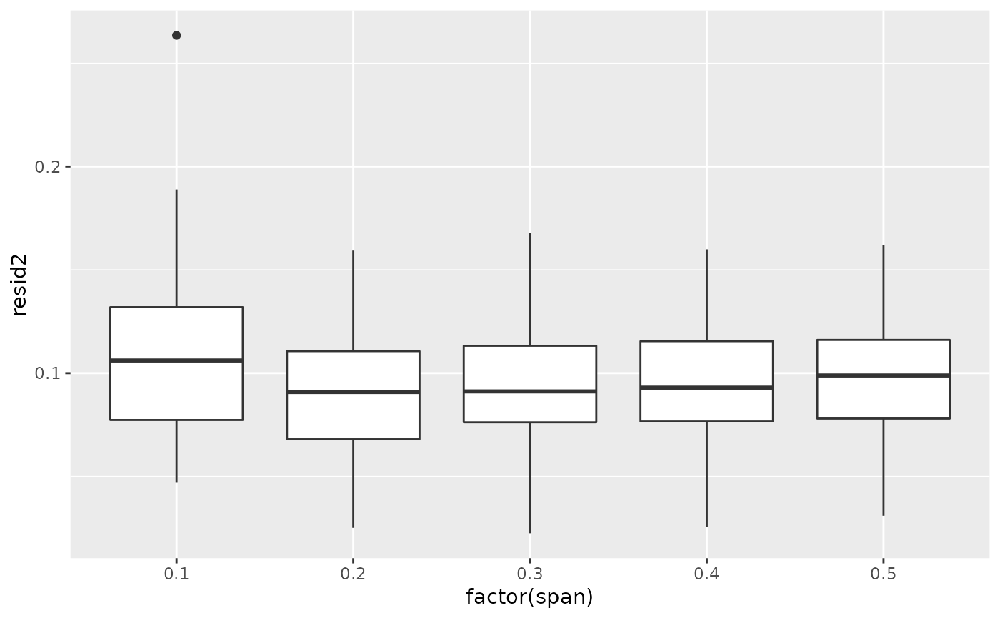

Calculate loess span parameter using cross validation
loess_cv.RdCalculate loess span parameter using cross validation
Usage
loess_cv(formula, data, span = seq(0.1, 1, by = 0.1), v = 5, repeats = 2)Arguments
- formula
see loess()
- data
see loess()
- span
see loess()
- v
Number of CV fold, see rsample::vfold_cv()
- repeats
NUmber of CV repeats, see rsample::vfold_cv()
Examples
library(dplyr)
#>
#> Attaching package: ‘dplyr’
#> The following objects are masked from ‘package:stats’:
#>
#> filter, lag
#> The following objects are masked from ‘package:base’:
#>
#> intersect, setdiff, setequal, union
library(ggplot2)
data(economics, package="ggplot2") # load data
economics$index <- 1:nrow(economics) # create index variable
data <- economics[1:80, ] # retail 80rows for better graphical understanding
lresult = loess_cv(uempmed ~ index, data = data,
span = c(0.1, 0.2, 0.3, 0.4, 0.5), v = 5, repeats = 20)
lresult %>%
group_by(span) %>%
summarise(sse = mean(resid2))
#> # A tibble: 5 × 2
#> span sse
#> <dbl> <dbl>
#> 1 0.1 0.108
#> 2 0.2 0.0898
#> 3 0.3 0.0940
#> 4 0.4 0.0963
#> 5 0.5 0.0989
lresult %>%
ggplot(aes(x = factor(span), y = resid2)) +
geom_boxplot()
